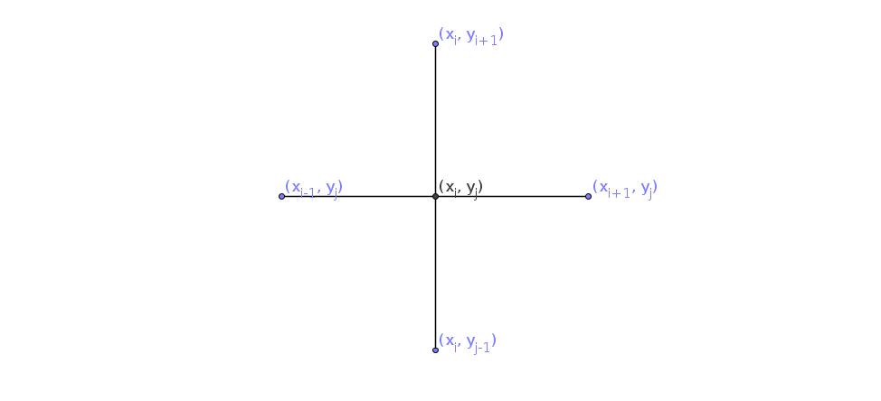
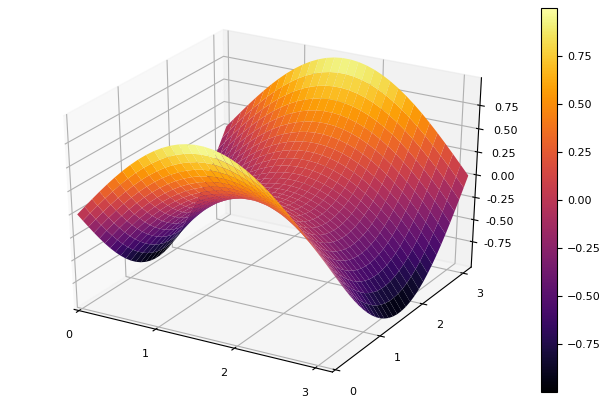
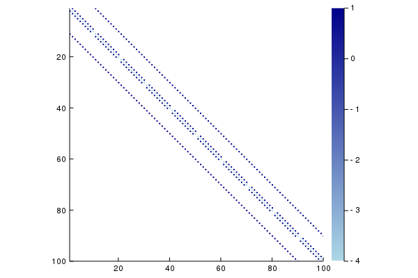

Minimalne ploskve (Laplaceova enačba)
Naloga
Žično zanko s pravokotnim tlorisom potopimo v milnico, tako da se nanjo napne milna opna.
Radi bi poiskali obliko milne opne, razpete na žični zanki. Malo brskanja po fizikalnih knjigah in internetu hitro razkrije, da ploskve, ki tako nastanejo, sodijo med minimalne ploskve, ki so burile domišljijo mnogim matematikom in nematematikom. Minimalne ploskve so navdihovale tudi umetnike npr. znanega arhitekta Otto Frei, ki je sodeloval pri zasnovi Muenchenskega olimpijskega stadiona, kjer ima streha obliko minimalne ploskve.
 Slika wikipedia
Slika wikipedia
{kind=link}
Matematično ozadje
Ploskev lahko predstavimo s funkcijo dveh spremenljivk $u(x,y)$, ki predstavlja višino ploskve nad točko $(x,y)$. Naša naloga bo poiskati funkcijo $u(x,y)$ na tlorisu žične mreže.
Funkcija $u(x,y)$, ki opisuje milno opno, zadošča matematična enačbi, znani pod imenom Poissonova enačba
\[\Delta u(x,y)=\rho(x,y).\label{eq:Poisson}\]
Funkcija $\rho(x,y)$ je sorazmerna tlačni razliki med zunanjo in notranjo površino milne opne. Tlačna razlika je lahko posledica višjega tlaka v notranjosti milnega mehurčka ali pa teže, v primeru opne, napete na žični zanki. V primeru minimalnih ploskev pa tlačno razliko kar zanemarimo in dobimo Laplaceovo enačbo
\[\Delta u(x,y) = 0\label{Laplace}.\]
Če predpostavimo, da je oblika na robu območja določena z obliko zanke, rešujemo robni problem za Laplaceovo enačbo. Predpostavimo, da je območje pravokotnik $[a, b]\times[c, d]$. Poleg Laplacove enačbe, veljajo za vrednosti funkcije $u(x, y)$ tudi robni pogoji:
\[\begin{array}{ll} u(x, c) = f_s(x) & u(x, d) = f_z(x)\\ u(a, y) = f_l(y) & u(b, y) = f_d(y),\\ \end{array}\]
kjer so $f_s, f_z, f_l$ in $f_d$ dane funkcije. Rešitev robnega problema je tako odvisna od območja, kot tudi od robnih pogojev.
Za numerično rešitev Laplaceove enačbe za minimalno ploskev dobimo navdih pri arhitektu Frei Otto, ki je minimalne ploskve raziskoval tudi z elastičnimi tkaninami.
Diskretizacija in linearni sistem enačb
Problema se bomo lotili numerično, zato bomo vrednosti $u(x,y)$ poiskali le v končno mnogo točkah: problem bomo diskretizirali. Za diskretizacijo je najpreprosteje uporabiti enakomerno razporejeno pravokotno mrežo točk. Točke na mreži imenujemo vozlišča. Zaradi enostavnosti bomo obravnavali le mreže z enakim razmikom v obeh koordinatnih smereh. Omejimo se le na pravokotna območja v ravnini $[a, b]\times[c, d]$. Interval $[a, b]$ razdelimo na $n+1$ delov, interval $[c, d]$ pa na $m+1$ delov in dobimo zaporedje koordinat
\[\begin{array}{lcl} a=x_0, x_1,&\ldots&x_{n+1}=b\\ c=y_0, y_1,&\ldots&y_{m+1}=d,\\ \end{array}\]
ki definirajo pravokotno mrežo točk $(x_i, y_j)$. Namesto funkcije $u: [a,b]\times[c,d]\to \mathbb{R}$ tako iščemo le vrednosti
\[u_{ij} = u(x_i, y_j),\quad i=1,\ldots n, j=1,\ldots m\]

Iščemo torej enačbe, ki jim zadoščajo elementi matrike $u_{ij}$. Laplaceovo enačbo lahko diskretiziramo z končnimi diferencami, lahko pa izpeljemo enačbe, če si ploskev predstavljamo kot elastično tkanino, ki je fina kvadratna mreža iz elastičnih nitk. Vsako vozlišče v mreži je povezano s 4 sosednjimi vozlišči. Vozlišče bo v ravnovesju, ko bo vsota vseh sil nanj enaka 0. Predpostavimo, da so vozlišča povezana z idealnimi vzmetmi in je sila sorazmerna z razliko. Če zapišemo enačbo za komponente sile v smeri $z$, dobimo za točko $(x_i, y_j, u_{ij})$ enačbo
\[u_{i-1,j}+u_{i,j-1} - 4u_{ij} + u_{i+1,j}+u_{i,j+1} = 0.\]
Za $u_{ij}$ imamo tako sistem linearnih enačb. Ker pa so vrednotsi na robu določene z robnimi pogoji, moramo elemente $u_{0j}$, $u_{n+1,j}$, $u_{i0}$ in $u_{im+1}$ prestaviti na desno stran in jih upoštevati kot konstante.
Matrika sistema linearnih enačb
Sisteme linearnih enačb običajno zapišemo v matrični obliki
\[A\mathbf{x}=\mathbf{b},\]
kjer je $A$ kvadratna matrika, $\mathbf{x}$ in $\mathbf{b}$ pa vektorja. Spremenljivke $u_{ij}$ razvrstimo po stolpcih v vektor.
Eden od načinov, kako lahko elemente matrike razvrstimo v vektor, je, da stolpce matrike enega za drugim postavimo v vektor. Indeks v vektorju $k$ lahko izrazimo z indeksi $i,j$ v matriki s formulo $k = i+(n-1)j.$
Za $n=m=3$ dobimo $9\times 9$ matriko
\[L = \begin{bmatrix} -4& 1& 0& 1& 0& 0& 0& 0& 0\\ 1& -4& 1& 0& 1& 0& 0& 0& 0\\ 0& 1& -4& 0& 0& 1& 0& 0& 0\\ 1& 0& 0& -4& 1& 0& 1& 0& 0\\ 0& 1& 0& 1& -4& 1& 0& 1& 0\\ 0& 0& 1& 0& 1& -4& 0& 0& 1\\ 0& 0& 0& 1& 0& 0& -4& 1& 0\\ 0& 0& 0& 0& 1& 0& 1& -4& 1\\ 0& 0& 0& 0& 0& 1& 0& 1& -4\\ \end{bmatrix},\]
ki je sestavljena iz $3\times 3$ blokov
\[\begin{bmatrix}-4&1&0\cr 1&-4&1\cr 0&1&-4\end{bmatrix},\quad \begin{bmatrix}1&0&0\cr 0&1&0\cr 0&0&1\end{bmatrix}.\]
desne strani pa so
\[\mathbf{b} = -[u_{01}+u_{10}, u_{20}, \ldots u_{n0}+u_{n+1,1},u_{02}, 0,\ldots u_{n+1,2}, u_{03}, 0\ldots u_{n, m+1},u_{n,m+1}+u_{n+1,m}]^T.\]
Primer
robni_problem = RobniProblemPravokotnik(
LaplaceovOperator{2},
((0, pi), (0, pi)),
[sin, y->0, sin, y->0]
)
Z, x, y = resi(robni_problem)
surface(x, y, Z)
savefig("milnica.png")
Napolnitev matrike ob eliminaciji
Matrika Laplaceovega operatorja ima veliko ničelnih elementov. Takim matrikam pravimo razpršene ali redke matrike. Razpršenost matirke lahko izkoristimo za prihranek prostora in časa, kot smo že videli pri tridiagonalnih matrikah. Vendar se pri Gaussovi eliminaciji delež ničelnih elementov matrike pogosto zmanjša. Poglejmo kako se odreže matrika za Laplaceov operator.
using Plots
L = matrika(100,100, LaplaceovOperator(2))
spy(sparse(L), seriescolor = :blues)
Če izvedemo eliminacijo, se matrika deloma napolni z neničelnimi elementi:
import LinearAlgebra.lu
LU = lu(L)
spy!(sparse(LU.L), seriescolor = :blues)
spy!(sparse(LU.U), seriescolor = :blues)
Koda
NumMat.LaplaceovOperatorNumMat.LaplaceovOperatorNumMat.RobniProblemPravokotnikNumMat.desne_straniNumMat.matrikaNumMat.resi
NumMat.LaplaceovOperator — TypeL = LaplaceovOperator{2}()Podatkovni tip brez vrednosti, ki predstavlj laplaceov operator v d dimenzijah.
NumMat.LaplaceovOperator — MethodLaplaceovOperator(d)Vrni vrednost tipa LaplaceovOperator{d} v d dimenzijah.
NumMat.RobniProblemPravokotnik — TypeRobniProblemPravokotnik(operator, ((a, b), (c, d)), [f_s, f_d, f_z, f_l])Definiraj robni problem za enačbo z danim diferencialnim operatorjem
\[\mathcal{L} u(x,y) = 0\]
na pravokotniku $[a, b]\times[c, d]$, kjer so vrednosti na robu podane s funkcijami $u(x, c) = f_s(x)$, $u(b, y) = f_d(y)$, $u(x, d) = f_z(x)$ in $u(a, y) = f_l(y)$.
NumMat.desne_strani — Methoddesne_strani(s, d, z, l, LaplaceovOperator(2))Izračunaj desne strani pri reševanju robnega problema za Laplaceovo enačbo v 2 dimenzijah.
Argumenti
s::Vector: robne vrednosti na spodnjem robud::Vector: robne vrednosti na desnem robuz::Vector: robne vrednosti na zgornjem robul::Vector: robne vrednosti na levem robu
NumMat.matrika — MethodL = matrika(n, m, LaplaceovOperator(2))Zapiši matriko za Laplaceov operator v 2D na pravokotnem območju. Matrika L je matrika sistema enačb za diskretizirano laplaceovo enačbo
\[u_{i-1,j}+u_{i,j-1} - 4u_{ij} + u_{i+1,j}+u_{i,j+1} = 0.\]
NumMat.resi — Methodresi(::RobniProglemPravokotnik; nx=100, ny=100)Izračunaj približek za rešitev robnega problema za operator z metodo deljenih diferenc.
Rezultat
Z::Matrixje matrika vrednosti rešitve v notranjosti in na robu.x::Vectorje vektor vrednosti abscisey::Vectorje vektor vrednosti ordinate
Primer
using Plots
robni_problem = RobniProblemPravokotnik(
LaplaceovOperator{2},
((0, pi), (0, pi)),
[sin, y->0, sin, y->0]
)
Z, x, y = resi(robni_problem)
surface(x, y, Z)